1.1 组成部分与 IOS 设计哲学
原始手册对应：## 3.1 IOS Workspaces + ## 3.2 UI Controls | 整理时间：2026-05-30
本章定位：1.1 节是对 IOS 软件界面整体组成与交互控件的抽象概述。所有子页面（1.2.x ~ 1.7）均建立在本节定义的工作区与控件体系之上。
1.1.1 IOS工作区
IOS 工作区软件界面由以下六大工作区组成，每个工作区承担不同的训练控制职责：
| 工作区 | 功能描述 |
|---|---|
| 控制面板（Control Board） |
• 包含与本机场（ownship）相关的所有参数，是访问本机场参数的主要途径，允许直接在面板上更改数值（例如，调整燃油重量）； • 包含滑动面板（参考 1.2.6）：例如，用于激活和预位故障； • 包含一个通用页脚（参考 1.2.7）：提供对常用命令的快速访问； • 包含 5 个标签页（Tabs）：LESSON PLAN、DOCS、CURRENT CONDITIONS、AIRCRAFT、REFERENCE AIRPORT，以及教员台滑动面板（INSTRUCTOR STATION Sliding Panel） |
| 地图（Map） |
• 包含与环境相关的元素； • 具有 2D/3D 地图可视模式； • 包含环境特征（如风暴、导航台 Navaids stations、模拟的入侵者或交通 simulated intruders or traffic）； • 显示起飞/进近/跑道、飞机轨迹以及飞行管理系统（FMS）航线 |
| 课程计划剖面（Lesson Plan Profile） |
• 包含与课程相关的所有元素； • 监控和控制课程的执行； • 显示在课程计划编辑器中创建的课程； • 允许教员自动执行某个步骤，而不是输入单个命令 |
| 复示仪表（Instruments Repeaters） | 允许教员选择将哪些座舱仪表复示或显示在 IOS（教员操作台）显示屏上 |
| 维护（Maintenance） | 提供相关页面，允许维护人员执行各种模拟机维护任务 |
| 高级（Advanced） |
• 具备快速访问按钮，允许教员进行如下操作： • 修改飞机、位置和环境参数； • 执行各种类型的冻结和重置； • 触发故障； • 访问附加页面 |
切换当前 IOS 工作区通过控制面板底部（Control Board Footer）上的 Workspace 按钮完成。点击该按钮会显示一个工作区卷动菜单（Workspace rollup menu），其中列出所有可用工作区。
下图展示了 IOS 中最核心的控制面板（Control Board）界面布局。教员通过该工作区可直接修改飞机参数、激活滑动面板，并访问底部快捷命令栏。
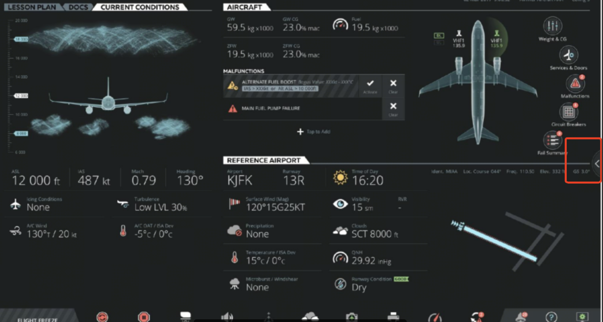
1.1.2 用户交互（User Interface Controls）
用来控制各种软件定义的变化量的 UI 交互方式。以下控件遍布于 IOS 各工作区中，是教员与模拟器交互的基础语言。
基础控件
| 控件类型 | 交互方式 | 说明 |
|---|---|---|
| 滑动面板（Sliding Panel） | 从左侧滑入，左滑/点击外部关闭 | 主要子页面形式，数据通常即时生效 |
| 文本输入框（Text Field） | 点击激活对应键盘 | 部分支持 Wheel Picker（长按/上下滑动呼出） |
| 只读字段（Read Only Field） | 无需操作 | 仅显示状态 |
| 指示灯（Indicators） | 无需操作 | 显示组件的当前状态 |
| 按钮（Button） | 点击激活，亮浅蓝色 | — |
| 滚动菜单（Roll-up Menu） | 点击展开，选择后生效，点击外部取消 | — |
| 轮选器（Wheel Picker） | 长按/滑动参数呼出 | 绿勾确认，红叉取消 |
选择类控件
| 类型 | 特性 | 视觉反馈 |
|---|---|---|
| Toggle Normal 普通切换 |
普通切换 | 正常态 → 激活态（亮蓝） |
| Toggle Fail 故障切换 |
激活后为红色，触发故障并记录到 Malfunctions 区域与 Footer；再次点击解除 | 激活后红色高亮 |
| Action Button 瞬时动作 |
激活后亮数秒，返回正常态或禁用态 | 短暂高亮后恢复 |
| Expandable Button 展开滑动面板 |
点击展开关联滑动面板 | — |
| Radio Button 单选按钮 |
互斥选择 | 选中项高亮 |
| Checkbox 复选框 |
独立开关 | 勾选/取消勾选 |
| Slider 滑块 |
最小值~最大值调节 | 滑块位置实时反馈 |
| Keypad 键盘 |
数字/字符输入 | 绿勾确认，红叉取消 |
1.1.3 参数选择与数据输入
在 IOS 中，几乎所有参数的修改都遵循统一的输入范式：点击参数文本字段 → 弹出对应输入控件 → 确认/取消。以下表格详细列出了各类输入控件的行为与交互细节。
| 输入控件 | 说明与交互细节 |
|---|---|
| Quick Access Buttons （快速访问按钮） |
点击快速访问按钮会显示相应的滑动面板。例如：DL、UL、VHF、Weight&CG、Services&Doors、Malfunctions、Circuit Breakers、Fail Summary 等按钮。 |
| Dropdown Buttons （下拉按钮） |
点击下拉按钮会展开特定项目的选择项，选择后生效。 |
| Selection Buttons （选择按钮）— 普通切换 |
具有三种状态：正常状态、激活状态、禁用状态。点击后在正常态与激活态（亮蓝）之间切换。 |
| Selection Buttons （选择按钮）— 故障切换 |
具有两种状态：正常状态、激活状态（红色）。一旦触发，故障将被控制面板记录，并显示在故障部分、控制面板底部以及故障滑动面板中。从红色激活状态再次点击可取消故障。 |
| Selection Buttons （选择按钮）— 操作按钮 |
具有三种状态：正常状态、激活状态（持续数秒）、禁用状态。点击后按钮会亮起数秒，随后返回正常状态或禁用状态，取决于各种条件。 |
| Expandable Buttons （扩展按钮） |
点击可展开按钮会显示关联的滑动面板。 |
| Radio Buttons （单选按钮） |
点击单选按钮允许教员从预定义的选项集中仅选择一项。这些按钮是互斥的。 |
| Checkbox （复选框） |
复选框是一种切换功能，用于选择或取消选择特定项目。 |
| Sliders （滑块） |
滑块也可称为滑块控件或滚动条。它们有多种形式，但都允许将特定项目从最小值调整到最大值。 |
| Wheel Picker （轮选器） |
适用于重量、时间、日期、机场、跑道、跑道条件、表面风、温度、天气、海平面气压等参数。 根据 IOS 控制面板的配置，某些参数可通过滚轮选择器进行调整。要激活特定项目的滚轮选择器，请按以下步骤操作： • 选择一个特定参数； • 按住该参数直至显示滚轮选择器，或上下滑动该参数以显示滚轮选择器； • 滚动选择项并选择。 绿色对勾确认输入，红色叉号取消输入。 |
| Keypad （键盘） |
许多参数可通过键盘进行调整。在键盘中输入数值时，既可以使用滑块，也可以使用键盘按键。 绿色对勾确认输入，红色叉号取消输入。 |
| Interactive Graphs （交互式图表） |
交互式图表中部分图表具有交互功能，允许教员通过直接触摸图表上的元素来更改数值。 例如，在 Slew 图表中，教员可以移动图表上的「+」符号，滑块和文本字段将根据图表上新的「+」位置自动更新。 |
控件截图示例
以下截图展示了 1.1.3 节中各类参数输入控件在 IOS 界面中的实际呈现效果（均来自原始手册）：
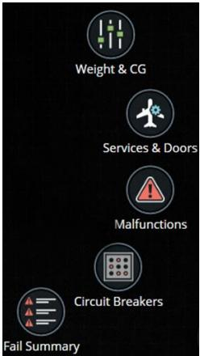
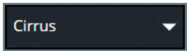
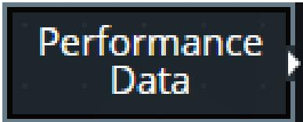
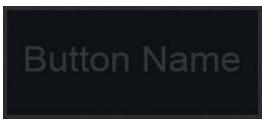
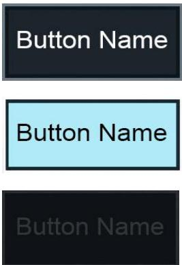
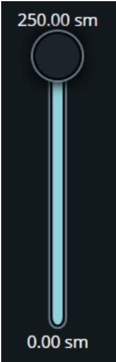
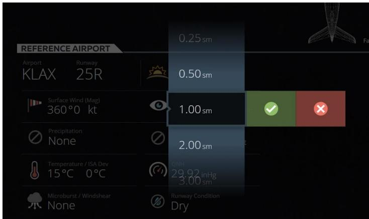
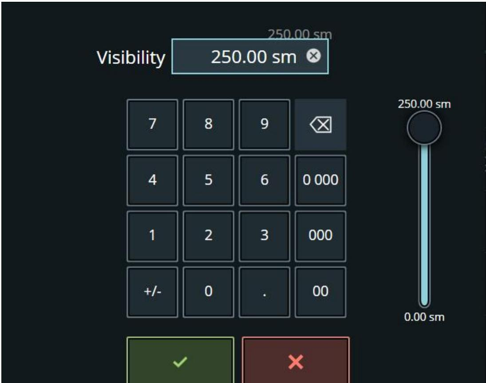
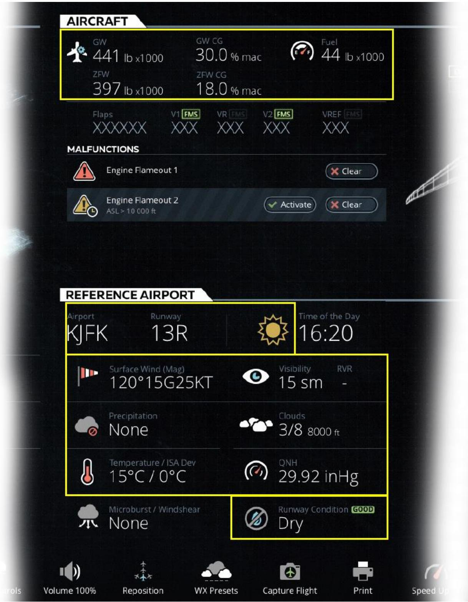
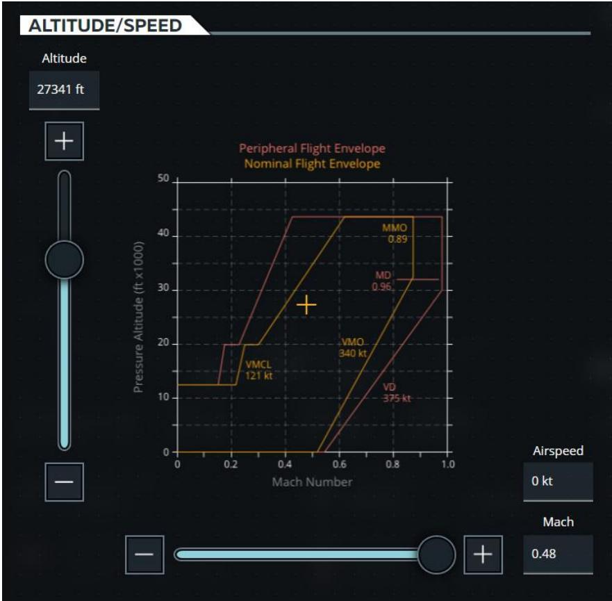
文档定位：本文档从软件架构与领域建模视角，解析 CAE IOS 教员台为何将繁杂的功能抽象为六大工作区（Workspaces），揭示其背后的设计哲学、关注点分离原则与认知心理学逻辑。供后续系统重构、功能扩展或新平台设计时参考。
1.1.4 抽象的顶层维度：对象 → 环境 → 流程 → 监控 → 运维 → 干预
原始手册虽然没有明言，但六大模块的划分暗合了一条清晰的认知链——从"训练什么"到"如何保障"。这不是简单的功能列表平铺，而是对航空训练场景的领域驱动建模（Domain-Driven Modeling）。
| 模块 | 核心关注点 | 抽象逻辑 |
|---|---|---|
| Control Board 控制面板 |
本机（Ownship）实时参数 | 训练对象——所有与"这架飞机此刻状态"相关的参数。它是整个系统的聚合根（Aggregate Root），其他工作区围绕它展开或从它派生。 |
| Map 地图 |
空间与环境 | 训练场景——飞机所处的物理世界（天气、地形、交通、导航台）。与 Control Board 形成"对象-场景"正交关系。 |
| Lesson Plan Profile 课程计划剖面 |
课程执行时间线 | 训练剧本——按阶段推进的预定义流程。它将训练活动从"手动即兴"提升为"可编排、可复现、可评估"的结构化脚本。 |
| Instruments Repeaters 复示仪表 |
座舱仪表复示 | 观察窗口——教员视角的飞行状态可视化。解决"教员在 IOS 屏幕上看到什么"的问题，与学员座舱仪表形成镜像。 |
| Maintenance 维护 |
模拟器硬件/软件维护 | 系统运维——保障设备正常运行的后台功能。通过角色隔离，避免维护操作污染训练界面。 |
| Advanced 高级 |
快速干预与故障注入 | 高级干预——打破常规流程的应急/特殊操作。为时间敏感场景提供"绕过层级导航的直达电梯"。 |
1.1.5 Control Board 为什么是"枢纽"？
原始文档有一句话非常关键：
Changing the current IOS workspace is performed through a Workspace button on the Control Board footer. Tapping this button displays a Workspace rollup menu that shows all available workspaces.
这意味着 Control Board 是默认锚点（Home Base），其他所有工作区都要从它出发切换。这不是 UI 上的偶然，而是架构上的必然，原因有三：
Ownship 是一切的核心
在飞行训练中，教员的绝大多数操作都是围绕"这架飞机"展开的——改重量、调天气、注故障、重新定位。Control Board 把所有这些参数按 Tabs（LESSON PLAN / DOCS / CURRENT CONDITIONS / AIRCRAFT / REFERENCE AIRPORT）聚合在一起，本质上是把飞机状态管理做成了一个领域驱动设计中的聚合根（Aggregate Root）。
复合容器设计：三层解耦
Control Board 不只是 5 个 Tabs 的平铺，它是一个 "主体面板 + 侧边滑动层 + 底部快捷栏" 的三层结构：
Control Board 三层架构
(Main Panel)
(Sliding Panel)
(Footer)
这种设计让"当前正在看什么"（Tabs）和"随时可以做什么"（Footer 的快速冻结/重置/切换工作区）解耦了。教员不需要离开当前上下文就能执行高频命令。
Tabs 的内部也是按"信息域"正交划分
Control Board 的 5 个 Tabs 同样遵循关注点分离：
| Tab | 信息域 | 设计意图 |
|---|---|---|
| LESSON PLAN | 训练流程域 | 课程阶段与步骤的管理入口 |
| DOCS | 知识参考域 | 训练过程中需要查阅的文档（航图、检查单、SOP） |
| CURRENT CONDITIONS | 即时环境域 | 飞机当前所处的大气与环境状态（云层、结冰、湍流、风） |
| AIRCRAFT | 飞机物理域 | 飞机自身参数（重量、重心、燃油、通信、故障） |
| REFERENCE AIRPORT | 地面基准域 | 参考机场、跑道、重新定位、地面操作 |
1.1.6 为什么把 Map 和 Control Board 分开？
这是一个容易混淆的点：Map 上也能看到飞机位置、航迹、FMS 航线，那为什么不合并到 Control Board 里？
原始文档给出的答案是：信息模态不同。
| 维度 | Control Board | Map |
|---|---|---|
| 信息类型 | 离散参数（数值、状态、选项） | 连续空间信息（坐标、轨迹、区域、矢量） |
| 交互方式 | 点击、输入、选择、切换 | 拖拽、缩放、平移、框选、径向菜单 |
| 认知模式 | 逻辑推理（"把重量改成 65 吨"） | 空间直觉（"把飞机拖到五边进近起始点"） |
| 视觉占比 | 表格化、高密度文本 | 大面积图形渲染、2D/3D 透视 |
| 原始手册定位 | ## 4. Control Board Workspace | ## 15. Map Workspace |
如果把两者硬塞进一个面板，会导致：
- 参数输入区被地图压缩，触控精度下降；
- 地图的可视化被表格化参数打断，空间感知断裂；
- 教员在"精确输入数值"和"感知空间态势"两种认知模式之间频繁切换，增加心智负担。
1.1.7 Lesson Plan Profile 的"剖面"抽象
原始文档 ## 14.1 有一句话：
The training elements such as training phases and associated steps are presented over a flight profile (amber line).
这揭示了 Lesson Plan Profile 的本质——它不是 Control Board 里 LESSON PLAN Tab 的重复，而是同一套课程数据的不同可视化模态。
| 视图 | 形式 | 适用场景 | 认知优势 |
|---|---|---|---|
| LESSON PLAN Tab （在 Control Board 内） |
纵向滚动列表 | 精确查看某一步骤的详情，逐步执行 | 细节导向（Detail-Oriented） |
| Lesson Plan Profile （独立工作区） |
横向飞行剖面图 | 一眼看清整个课程的完整结构、阶段关系和当前进度 | 全局导向（Overview-Oriented） |
这是一种典型的 "同一领域模型，多种表现层（Multiple Presentations of a Single Domain Model）" 设计。教员根据认知需求自由选择：
- 要细节 → 去 Control Board 的 LESSON PLAN Tab，可以逐步点击 Execute、Skip、Go to Current；
- 要全局 → 去 Lesson Plan Profile，可以看到 amber line 上所有阶段的相对位置、时间轴和依赖关系。
1.1.8 Advanced 的"快速访问"哲学
Advanced 工作区在原始文档 ## 16 章有大量子页面：飞机、位置、环境、入侵者、通信、故障、UPRT、重置/冻结、录制。这些功能其实在 Control Board 或 Map 里都有入口（比如故障在 AIRCRAFT Tab 的 Malfunctions Sliding Panel 里，环境在 REFERENCE AIRPORT Tab 里）。
那为什么要重复造一个 Advanced？
原始文档 ## 16 章开头说：
Features quick access buttons allowing the instructor to: Modify Aircraft, Position and Environment parameters; Perform various types of freeze and resets; Trigger failures; Access additional pages.
关键词是 "quick access"。 Advanced 的设计意图是绕过层级导航的"直达电梯"。
场景推演：为什么需要 Advanced
假设一个紧急训练场景：教员突然发现学员偏离航线，需要立即执行以下组合拳：
- 注入风切变（Wind Shear）
- 冻结飞机位置（Position Freeze）
- 呼叫塔台（ATC Comm）
如果全部通过 Control Board 操作：
AIRCRAFT Tab → Malfunctions Sliding Panel → 找到 Windshear → 激活
→ Footer → Freezes → More → Position Freeze
→ 还要想办法打开通信……黄花菜都凉了。
Advanced 把所有"可能需要快速组合拳"的操作扁平化到一个界面：
Advanced → Environment → Wind Shear（一步直达）
Advanced → Resets/Freezes → Position Freeze（一步直达）
Advanced → Comms → ATC（一步直达）1.1.9 Maintenance 的角色隔离
Maintenance 工作区是六大模块中最容易被低估的一个。原始文档 ## 12 章描述它：
Offers pages that allows maintenance personnel to perform various simulator maintenance tasks.
它的抽象逻辑非常纯粹：按角色隔离（Role-Based Isolation）。
维护人员与教员是两个完全不同的用户角色：
- 教员关心的是"如何让训练更有效"——调参数、注故障、推进课程；
- 维护人员关心的是"设备是否正常"——校准传感器、测试运动平台、更新软件配置。
如果把维护功能混在 Control Board 里，会导致：
- 教员误触维护功能，破坏模拟器校准状态；
- 维护人员需要在繁杂的训练界面中寻找专业工具；
- 权限管理复杂化（需要动态隐藏/显示维护按钮）。
将其独立为一个工作区，并通常配合物理权限控制（如维护密码、独立登录），是最干净的设计方案。
1.1.10 抽象背后的工程启示：领域模型还原
把这六个模块还原成软件架构语言，CAE 实际上做了一次航空模拟训练领域的领域建模（Domain Modeling）：
┌─────────────────────────────────────────────┐
│ IOS 教员台系统 │
├─────────────────┬───────────────────────────┤
│ 核心训练域 │ Control Board (Ownship) │
│ (Core Domain) │ Map (Environment/Space) │
│ │ Lesson Plan (Time/Flow) │
│ │ Instruments (View/Monitor)│
├─────────────────┼───────────────────────────┤
│ 支撑保障域 │ Maintenance (System Ops) │
│ (Support Domain)│ Advanced (Fast Override) │
└─────────────────┴───────────────────────────┘
核心训练域的四模块正交关系
Control Board、Map、Lesson Plan Profile、Instruments Repeaters 四个模块遵循 "对象-场景-流程-监控" 的正交分解。它们之间的关系不是层级包含，而是数据联动、职责独立：
| 模块 A | 模块 B | 联动关系 |
|---|---|---|
| Control Board | Map | 修改参考机场/位置 → Map 重新定位；Map 上 Slew 拖动 → Control Board 参数同步更新 |
| Control Board | Lesson Plan Profile | 执行课程步骤 → Profile 上进度标记移动；Profile 上跳转到某阶段 → Control Board 同步显示该步骤详情 |
| Control Board | Instruments Repeaters | 修改飞机姿态/速度/高度 → Repeater 上对应仪表实时变化 |
| Map | Instruments Repeaters | Map 上显示飞机位置/航迹 → Repeater 上显示对应航向/高度指示 |
支撑保障域的两模块设计原则
- Maintenance：遵循 "角色隔离"（Role Isolation）——维护人员与教员完全分离，避免误操作。
- Advanced：遵循 "高频捷径"（Power-User Shortcut）——为时间敏感场景提供绕过常规层级的快速通道，允许功能重复以换取时间效率。
从六大模块到软件设计原则
离散参数（Control Board）与连续空间（Map）绝不混在一个面板，因为它们激活的是人脑不同的认知区域（左脑逻辑 vs. 右脑空间直觉）。
高频功能（Control Board、Map）常驻主界面；低频功能（Maintenance、Advanced）独立隔离，减少认知噪声。
不同用户角色的功能绝不混用。Maintenance 独立工作区 + 权限控制，是最干净的安全边界。
Lesson Plan 在 Tab 中是列表视图，在 Profile 中是剖面视图。不要强迫用户在"看细节"和"看全局"之间做取舍。
Advanced 的存在证明：常规层级导航（Tab → Sliding Panel → Sub-section）在紧急场景下是致命的。为关键操作预留"直达电梯"是安全系统的设计底线。
1.1.11 总结：这不是功能分组，而是认知建模
回到最初的问题：CAE 为什么把这六个模块这样划分？
答案不是"把功能列表分成六份"，而是"先定义了训练场景中教员的认知模型，再把功能映射到这个模型上"。
当你使用这套系统时，会感觉到"它懂我怎么工作"，而不是"我在适应它的菜单"。这种体验的背后，是架构师对以下问题的深刻理解：
- 教员在训练中关心什么？ → 飞机、环境、流程、仪表 → 四个核心工作区。
- 教员在什么情况下会抓狂？ → 紧急场景找不到按钮 → Advanced 扁平化设计。
- 谁不应该看到这个按钮？ → 维护人员 vs. 教员 → Maintenance 独立隔离。
- 教员需要同时看到多少信息？ → 细节 vs. 全局 → Lesson Plan 双视图设计。
- 信息以什么形态呈现最自然？ → 数字表格 vs. 空间地图 → Control Board 与 Map 分离。
文档版本：V1.0 | 创建时间：2026-06-09 | 来源：基于 CAE IOS 使用手册原始文档（## 3.1 ~ ## 16）的架构推演与领域建模分析 | 关联文档：章节映射表、1.1 组成部分 HTML